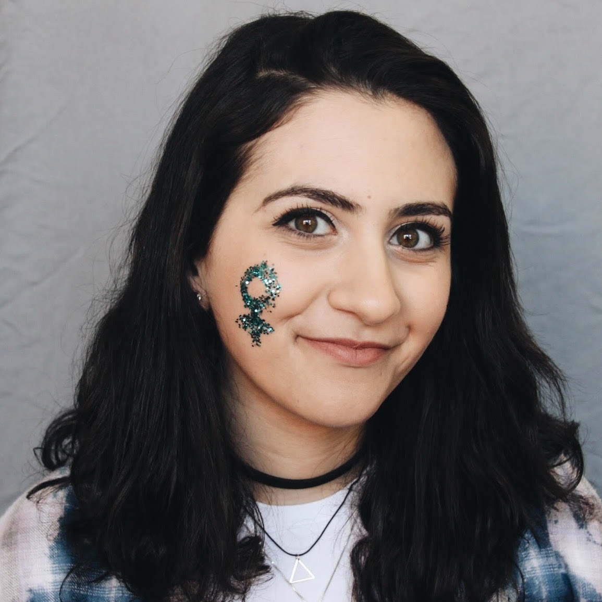
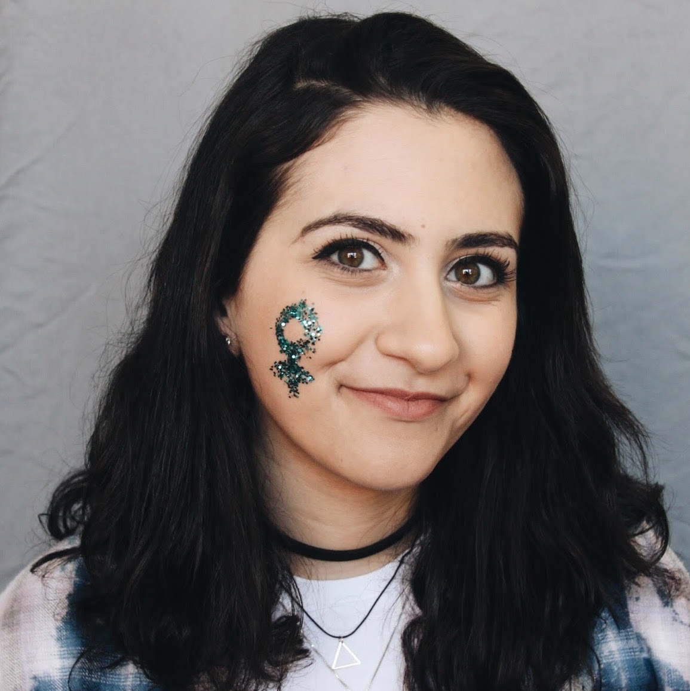

Welcome to Phi Sigma Sigma at the University of Rochester. As the president, or archon, of the Delta Beta chapter I’d like to share with you a little bit about our sisterhood and organization.
Our motto is “Aim High”, a maxim that we embrace to the fullest. Aside from involvement in our chapter, every sister partakes in additional extracurricular activities such as research, academic honor societies, athletic teams, performance groups, and paid work positions. Many sisters go on to hold leadership positions within these pursuits. This diverse involvement enables each sister to contribute something uniquely their own to our chapter and increases our presence and involvement within the larger campus community. We inspire each other to aim high and support one another in achieving our goals.
As a chapter we work together to raise funds for our philanthropy, the Phi Sigma Sigma foundation, whose philanthropic cause is to support school and college readiness and develop women leaders. We host two major philanthropy events each year, a kickball tournament and a trivia night, and organize several tabling sales to raise money for this great cause. Our chapter also comes together often for sisterhood events—think paint nights, apple picking, and literary readings—which foster a welcoming and supportive environment.
I have truly found my home in Phi Sigma Sigma and the women I am lucky enough to call my friends bring me happiness, laughter, and encouragement. I could not imagine my collegiate years without them; studying together in the library, fundraising, meeting up for social events, or just watching a movie together on our residence floor have brought me my favorite memories.
Please continue to explore our website and feel free to reach out to any sister if you have further questions or just want to get to know us!
LITP
Suzie Ziegler
Archon
Phi Sigma Sigma, Delta Beta Chapter